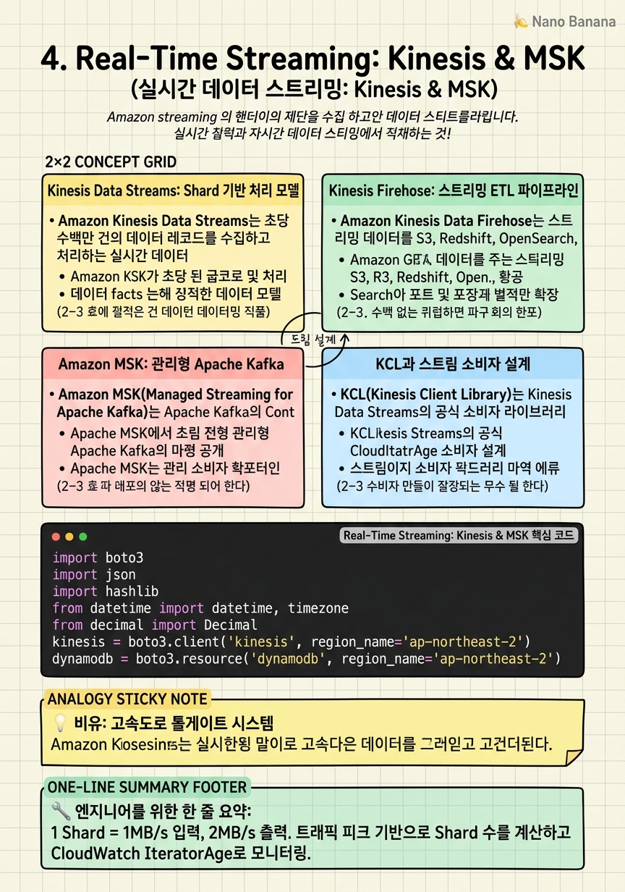

Real-Time Streaming: Kinesis & MSK

🎯 학습 목표
- Kinesis Shard 용량 설계와 리샤딩 전략을 수립할 수 있다
- Kinesis Firehose로 S3·Redshift·OpenSearch 데이터 파이프라인을 구성할 수 있다
- MSK와 Kinesis의 트레이드오프를 설명하고 적절히 선택할 수 있다
- KCL로 상태 저장 스트림 처리를 구현할 수 있다
- 스트리밍 데이터의 At-Least-Once와 Exactly-Once 처리를 보장할 수 있다
실시간 데이터 스트리밍은 IoT 센서 데이터, 사용자 행동 로그, 금융 거래, 애플리케이션 이벤트 등을 발생 즉시 처리하는 아키텍처 패턴입니다. 배치 처리 대비 레이턴시가 수초 이내이며, 실시간 대시보드·이상 탐지·동적 가격책정·사기 탐지 등 즉각적인 인사이트가 필요한 사용 사례에 필수입니다.
AWS에서 실시간 스트리밍의 두 주인공은 Amazon Kinesis Data Streams와 Amazon MSK(Managed Streaming for Apache Kafka)입니다. Kinesis는 AWS 네이티브로 완전 관리형이며 운영 부담이 거의 없습니다. MSK는 오픈소스 Apache Kafka를 완전 관리형으로 제공하며, 기존 Kafka 생태계와의 호환성이 필요할 때 선택합니다.
이 챕터에서는 Kinesis의 Shard 기반 처리 모델, Firehose의 데이터 레이크 통합, MSK의 Kafka 운영 모델, 그리고 스트림 처리의 핵심 패턴들을 다룹니다.
핵심 내용
Kinesis Data Streams: Shard 기반 처리 모델
Amazon Kinesis Data Streams는 초당 수백만 건의 데이터 레코드를 수집하고 처리하는 실시간 데이터 스트리밍 서비스입니다.
Shard는 Kinesis의 처리 단위입니다. 각 Shard는 초당 1MB(또는 1,000 레코드) 입력, 초당 2MB 출력을 처리합니다. 스트림 용량은 Shard 수로 결정되며, Shard를 추가하면 선형적으로 처리량이 증가합니다.
파티션 키(Partition Key)는 레코드가 어느 Shard로 가는지를 결정합니다. 동일 파티션 키의 레코드는 항상 같은 Shard로 라우팅되어 순서가 보장됩니다. 파티션 키를 균등하게 분포시키지 않으면 Hot Shard(특정 Shard에 부하 집중)가 발생합니다.
Enhanced Fan-Out은 소비자당 독립적인 2MB/s 전용 처리량을 제공합니다. 기본 공유 모드에서 소비자가 늘어날수록 처리량이 분산되는 문제를 해결합니다. HTTP/2 Push 방식으로 폴링 없이 레코드를 즉시 받습니다.
데이터 보존 기간은 기본 24시간이며 최대 365일까지 연장 가능합니다. 소비자 오류 시 재처리를 위해 보존 기간을 충분히 설정하는 것이 중요합니다.
Kinesis Firehose: 스트리밍 ETL 파이프라인
Amazon Kinesis Data Firehose는 스트리밍 데이터를 S3, Redshift, OpenSearch, Splunk 등 데이터 스토어에 자동으로 로드하는 완전 관리형 서비스입니다. 소비자 코드 없이 스트리밍 데이터를 데이터 레이크에 저장합니다.
Firehose는 버퍼링(buffering)을 통해 데이터를 묶어서 전달합니다. 버퍼 크기(1~128MB)나 버퍼 시간(60~900초) 중 먼저 달성되는 기준으로 전달합니다. S3 prefix 패턴을 설정하여 날짜별 파티셔닝을 자동화합니다.
변환 Lambda는 Firehose가 데이터를 저장하기 전에 Lambda를 호출하여 데이터를 변환합니다. JSON 정규화, PII 마스킹, Parquet 변환 등에 활용합니다.
Dynamic Partitioning은 레코드의 내용을 기반으로 S3 prefix를 동적으로 설정합니다. 예를 들어 {country}/{year}/{month}/ 형태로 자동 파티셔닝하여 Athena 쿼리 성능을 향상시킵니다.
Kinesis Data Streams와 Firehose의 차이는 다음과 같습니다.
| 비교 | Data Streams | Firehose | |---|---|---| | 데이터 보존 | 1~365일 | 전송 후 삭제 | | 소비자 코드 | 필요 | 불필요 | | 목적지 | 커스텀 | 사전 정의된 대상 | | 레이턴시 | 70ms | 60~900초 |
Amazon MSK: 관리형 Apache Kafka
Amazon MSK(Managed Streaming for Apache Kafka)는 Apache Kafka의 Control Plane(ZooKeeper 또는 KRaft, 브로커 관리)을 AWS가 관리하는 서비스입니다. Kafka의 강력한 기능과 생태계를 유지하면서 운영 부담을 줄입니다.
MSK를 선택하는 주요 이유는 다음과 같습니다.
- 기존 Kafka 기반 애플리케이션 이전(Migration) - Kafka Connect, Kafka Streams, ksqlDB 등 Kafka 생태계 활용 - 멀티클라우드 환경에서 Kafka 표준 API 사용 - 특정 Kafka 버전 고정 필요
MSK Serverless는 서버 없이 Kafka를 사용하는 옵션으로, 용량 계획 없이 자동 스케일링됩니다.
MSK Connect는 Kafka Connect 커넥터를 완전 관리형으로 실행합니다. S3 Sink Connector로 Kafka 토픽의 데이터를 S3에 자동 저장하거나, Debezium Source Connector로 데이터베이스 변경 사항을 CDC(Change Data Capture)로 Kafka에 스트리밍합니다.
| 비교 | Kinesis Data Streams | MSK | |---|---|---| | 관리 부담 | 최소 (완전 관리) | 보통 (브로커 관리) | | 생태계 | AWS 네이티브 | Kafka 오픈소스 | | 비용 단위 | Shard·시간 | 브로커·시간 | | 메시지 보존 | 최대 1년 | 무제한 (스토리지 기반) |
KCL과 스트림 소비자 설계
KCL(Kinesis Client Library)는 Kinesis Data Streams의 공식 소비자 라이브러리입니다. Shard 리밸런싱, 체크포인팅(DynamoDB 기반), 오류 처리, 로드 밸런싱을 자동화합니다.
KCL의 핵심 개념은 Record Processor입니다. 각 Shard에 하나의 Record Processor 인스턴스가 할당됩니다. initialize() → processRecords() → shutdown() 생명주기를 구현합니다. processRecords()에서 처리 완료 후 checkpoint()를 호출하여 DynamoDB에 현재 위치를 저장합니다.
Lambda 소비자는 KCL 없이 Lambda를 Kinesis 트리거로 사용하는 방식입니다. Shard당 하나의 Lambda 인스턴스가 호출됩니다. BisectBatchOnFunctionError를 활성화하면 실패 레코드를 이진 분할하여 문제 레코드를 격리합니다.
처리 보증: Kinesis는 At-Least-Once 전달을 제공합니다. Exactly-Once 처리는 소비자 측에서 Idempotency를 구현해야 합니다. 레코드의 sequenceNumber를 Idempotency Key로 사용하여 DynamoDB Conditional Write로 중복 처리를 방지합니다.
스트림 처리 패턴: 집계, 윈도잉, 조인
집계(Aggregation)는 스트리밍 데이터를 요약하는 기본 패턴입니다. 예를 들어 초당 결제 건수를 집계하거나, 1분 동안의 평균 응답 시간을 계산합니다.
윈도잉(Windowing)은 시간 기반으로 스트림 데이터를 그룹화합니다.
- 텀블링 윈도우(Tumbling Window): 고정 크기의 비겹치는 구간. 예: 0-60초, 60-120초 - 슬라이딩 윈도우(Sliding Window): 매 N초마다 이전 M초의 데이터를 집계. 예: 매 10초마다 지난 60초 평균 - 세션 윈도우(Session Window): 이벤트 간 비활성 구간이 일정 시간 이상이면 세션 종료
Managed Flink(Amazon Managed Service for Apache Flink)는 Flink 애플리케이션을 관리형으로 실행합니다. Table API와 SQL로 윈도잉·조인 등 복잡한 스트림 처리를 선언적으로 구현합니다.
스트림-스트림 조인은 두 스트림의 이벤트를 시간 윈도우 내에서 매칭하는 연산입니다. 예: 광고 노출 이벤트와 클릭 이벤트를 5분 내에 조인하여 클릭률을 실시간 계산합니다.
💡 비유로 이해하기
실시간 스트리밍을 고속도로 톨게이트 시스템에 비유해봅시다. Kinesis Shard는 고속도로 차선입니다. 차선이 많을수록(Shard 증가) 처리 가능한 차량(데이터)이 늘어납니다. 파티션 키는 차량 번호판입니다. 같은 지역 번호판(파티션 키)은 항상 같은 차선으로 유도하여 순서를 보장합니다.
Kinesis Firehose는 자동 ETC(하이패스)입니다. 별도의 처리 로직 없이 통과하는 차량 정보를 자동으로 데이터베이스(S3)에 기록합니다. 실시간으로 확인하려면 별도 직원(소비자 코드)이 필요합니다.
MSK(Kafka)는 국제 공항의 수하물 컨베이어벨트입니다. 전 세계 공항이 동일한 표준을 사용하므로, 인천에서 만든 시스템을 뉴욕에서도 그대로 쓸 수 있습니다. 반면 Kinesis는 국내 전용 KTX 시스템으로, AWS 내에서는 가장 최적화되어 있지만 다른 환경으로 이식하기 어렵습니다.
💻 코드 예시
Kinesis Data Streams에 이벤트를 발행하고, Lambda로 소비하여 실시간 집계를 DynamoDB에 저장하는 패턴입니다.
import boto3
import json
import hashlib
from datetime import datetime, timezone
from decimal import Decimal
kinesis = boto3.client('kinesis', region_name='ap-northeast-2')
dynamodb = boto3.resource('dynamodb', region_name='ap-northeast-2')
# 1. Kinesis에 이벤트 발행 (배치 전송으로 비용 절감)
def publish_events(stream_name: str, events: list[dict]) -> None:
records = [
{
'Data': json.dumps(event).encode('utf-8'),
'PartitionKey': event.get('user_id', 'default') # Hot Shard 방지: 균등 분산
}
for event in events
]
# put_records로 최대 500개 레코드 배치 전송
response = kinesis.put_records(StreamName=stream_name, Records=records)
failed = response.get('FailedRecordCount', 0)
if failed > 0:
print(f'WARNING: {failed} records failed — retry logic needed')
# 2. Lambda Handler — Kinesis 이벤트 소비 및 집계
# (이 함수는 Lambda에 배포됩니다)
def lambda_handler(event, context):
table = dynamodb.Table('click-aggregates')
processed_sequence_numbers = set()
for record in event['Records']:
seq_num = record['kinesis']['sequenceNumber']
# Idempotency: 이미 처리한 레코드 건너뜀 (Lambda가 At-Least-Once이므로 필수)
if seq_num in processed_sequence_numbers:
continue
payload = json.loads(record['kinesis']['data'])
user_id = payload['user_id']
event_type = payload['event_type']
minute_key = datetime.now(timezone.utc).strftime('%Y-%m-%dT%H:%M')
# DynamoDB Atomic Counter로 집계 (동시성 안전)
table.update_item(
Key={'pk': f'{event_type}#{minute_key}', 'sk': user_id},
UpdateExpression='ADD #count :one SET #ttl = :ttl',
ExpressionAttributeNames={'#count': 'count', '#ttl': 'ttl'},
ExpressionAttributeValues={
':one': Decimal('1'),
':ttl': Decimal(str(int(datetime.now(timezone.utc).timestamp()) + 3600))
}
)
processed_sequence_numbers.add(seq_num)
return {'statusCode': 200, 'processed': len(event['Records'])}
# 3. Kinesis Shard 수 동적 조정 (리샤딩)
def rescale_stream(stream_name: str, target_shard_count: int) -> None:
kinesis.update_shard_count(
StreamName=stream_name,
TargetShardCount=target_shard_count,
ScalingType='UNIFORM_SCALING' # 균등 분할
)
print(f'Stream {stream_name} scaling to {target_shard_count} shards')
# 발행 예시
events = [
{'user_id': f'user_{i % 100}', 'event_type': 'click', 'page': '/product/123'}
for i in range(100)
]
publish_events('user-events', events)put_records로 최대 500개 레코드를 배치 전송하여 API 호출 수를 줄입니다. PartitionKey에 user_id를 사용하되, 특정 user_id에 편중될 경우 Hot Shard 문제가 발생하므로 고른 분포를 검증해야 합니다. Lambda handler에서 sequenceNumber 기반 Idempotency를 구현합니다. DynamoDB ADD 연산은 atomic하여 동시성 문제 없이 카운터를 증가시킵니다. ttl 속성으로 집계 데이터를 자동 만료시킵니다.
🏭 현업에서의 평가
✅ 시니어가 보는 것
- 최대 트래픽 기반 Shard 수 계산 능력
- At-Least-Once 전달에서 Idempotency 구현 방법
- Hot Partition 감지 및 파티션 키 전략
- Enhanced Fan-Out vs 공유 소비자 트레이드오프
- Kinesis vs MSK vs SQS 선택 근거
⚠️ 레드 플래그
- Shard 수를 고정으로 설정하고 리샤딩 계획 없음
- Lambda 소비자에서 체크포인팅 미구현 — 람다 실패 시 레코드 재처리 순서 보장 불가
- 파티션 키를 항상 'default'로 설정 — 단일 Shard에 모든 부하 집중
- Firehose와 Kinesis Data Streams를 동일하게 취급
🎤 예상 인터뷰 질문
- 초당 50,000 레코드, 레코드당 평균 2KB의 이벤트 스트림을 위한 Kinesis 설계를 해주세요.
- Kinesis Lambda 소비자에서 특정 레코드 처리가 계속 실패할 때 어떻게 처리하겠습니까?
- 실시간 사기 탐지 시스템에서 스트리밍과 배치를 어떻게 조합하겠습니까?
✨ 핵심 요약
Shard = 처리량의 단위
1 Shard = 1MB/s 입력, 2MB/s 출력. 트래픽 피크 기반으로 Shard 수를 계산하고 CloudWatch IteratorAge로 모니터링.
파티션 키 분포가 성능을 결정
Hot Shard를 방지하기 위해 파티션 키를 균등하게 분산. UUID나 해시 기반 키가 효과적.
Firehose는 소비자 코드 없는 S3 파이프라인
람다 없이 Kinesis → S3/Redshift/OpenSearch 파이프라인 완성. Dynamic Partitioning으로 자동 파티셔닝.
MSK는 Kafka 생태계가 필요할 때
Kafka Connect, Kafka Streams, ksqlDB, CDC가 필요하거나 멀티클라우드 이식성이 중요할 때 선택.
At-Least-Once → Idempotency는 소비자 책임
sequenceNumber를 Idempotency Key로 DynamoDB Conditional Write. 생산자에서 중복 발행 가능성 항상 고려.
Enhanced Fan-Out으로 소비자 독립성 확보
소비자가 여러 개일 때 공유 처리량(2MB/s) 경쟁 대신 전용 처리량(2MB/s per consumer) 사용.
BisectBatchOnFunctionError로 독성 레코드 격리
Lambda 소비자 설정. 실패한 배치를 이진 분할하여 문제 레코드를 빠르게 격리하고 DLQ로 이동.
Managed Flink = 스트림 처리의 스위스 아미 나이프
윈도잉, 조인, CEP(Complex Event Processing)를 SQL로 선언적 구현. 데이터 분석가도 접근 가능.